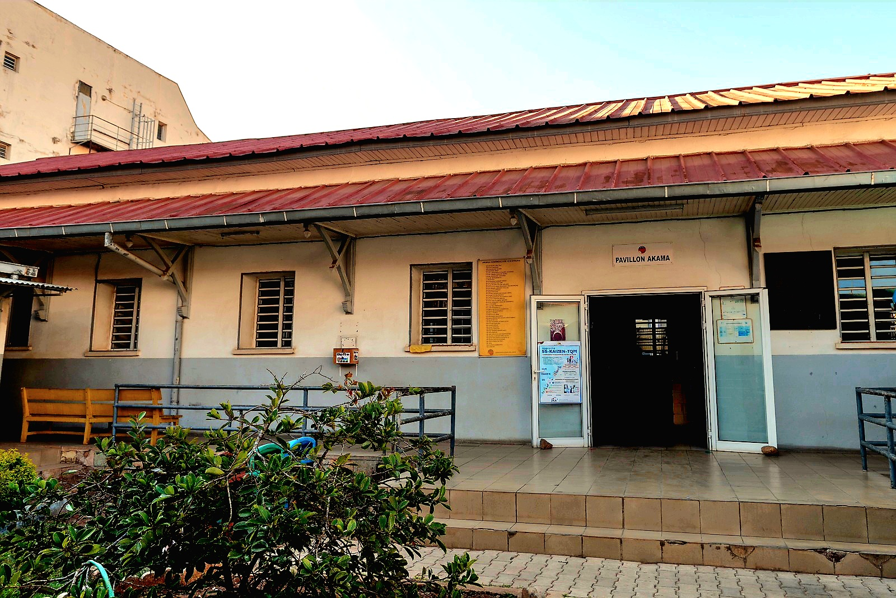
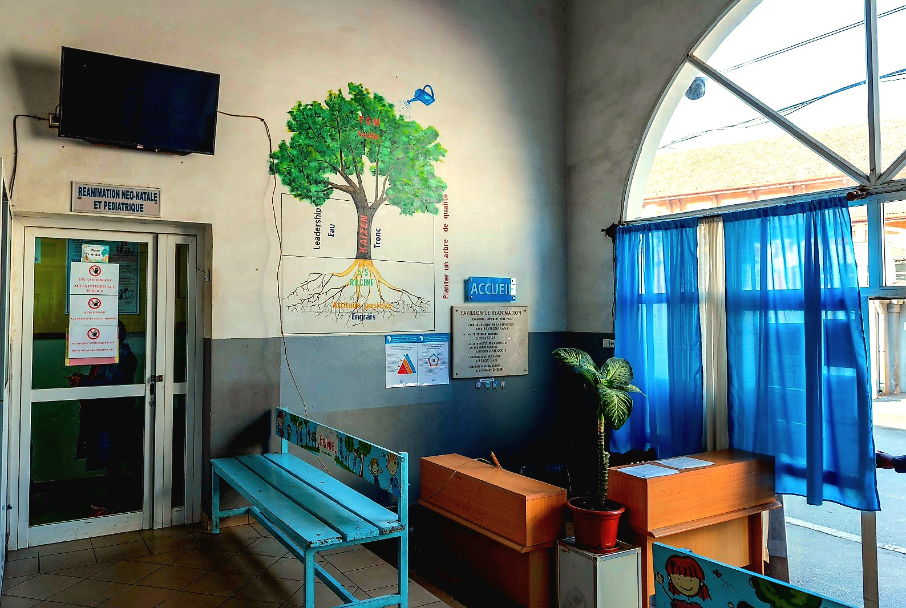
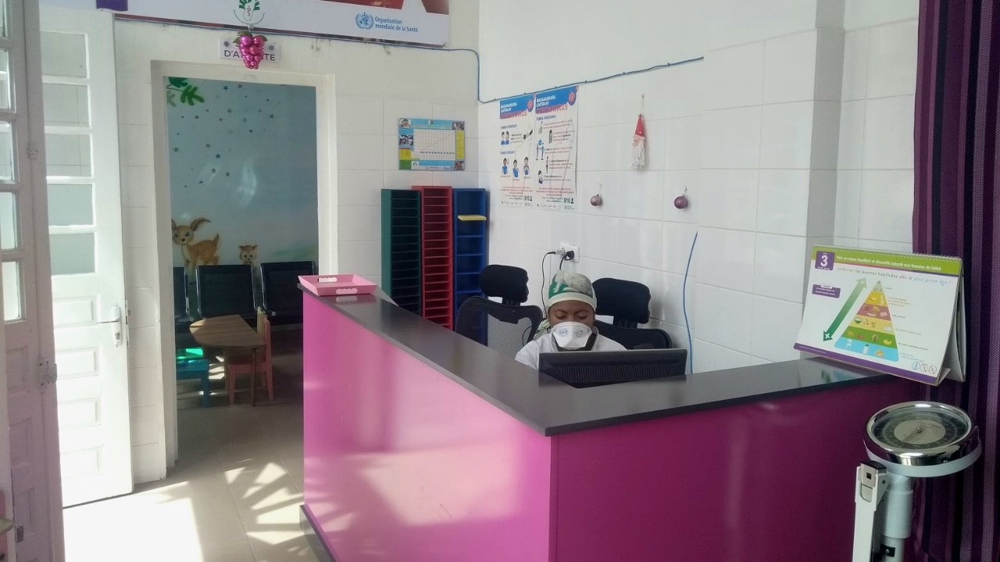
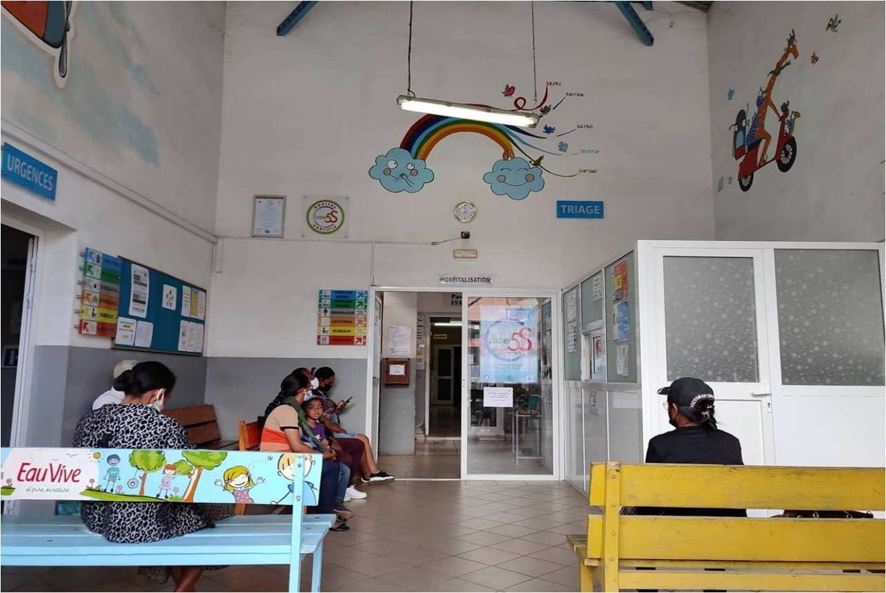
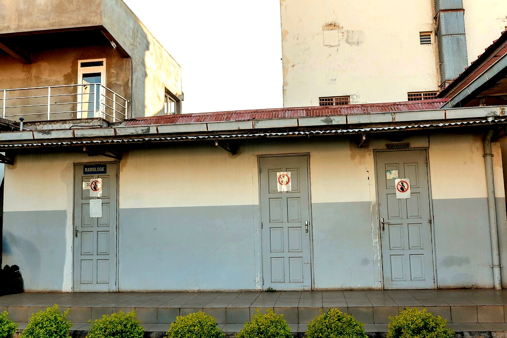

Bienvenue à Centre Hospitalier Universitaire Mère Enfant Tsaralalana (CHUMET)

HISTORIQUE

- 1928 : Construction de l’Hôpital pédiatrique à vocation médicale (sans chirurgie) sous le nom de « Hôpital de la Croix Rouge » et constitué de 3 pavillons
- 2006 : Construction d’un nouveau bâtiment abritant le service de réanimation néonatale et l’Accueil-Triage-Urgence (ATU)
- 2008 : Réhabilitation du Pavillon AKAMA grâce au partenariat (PPP)
- 2009 : Réhabilitation du Pavillon ISMAEL grâce au partenariat (PPP)

- 2010 : Introduction de l’approche qualité « 5S-KAIZEN-TQM »
- 2011 : Réhabilitation du Pavillon ROTARY grâce au partenariat (PPP)
- 2011 : Obtention du statut de site sentinelle de surveillance des méningites bactériennes et des diarrhées de l’enfant en collaboration avec l’OMS
- 2012 : Acquisition d’un générateur d’oxygène grâce au partenariat (PPP)
- 2013 : Innovation continue du plateau technique du laboratoire grâce au partenariat (PPP)

- 2015 : Changement d’appellation en Centre Hospitalier Universitaire Mère Enfant Tsaralalàna (CHUMET)
- 2017 : Construction du premier abri pour les accompagnants de malade
- 2018 : Acquisition d’une ambulance
- 2018 : Introduction de l’approche « Tri - Evaluation - Traitement d’Urgence » de l’OMS pour classer le degré d’urgence des patients dès l’accueil

- 2019 : Attribution du label 5S par le Ministère de la Santé Publique et JICA
- 2019 : Construction du deuxième abri pour les accompagnants de malade
- 2019 : Inauguration du Centre de vaccination
- 2022 : Acquisition de micro-onde de décontamination de déchets infectieux grâce au partenariat (PPP)
- 2025 : Disponibilité d’examen fonctionnel respiratoire par spirométrie grâce au partenariat (PPP)